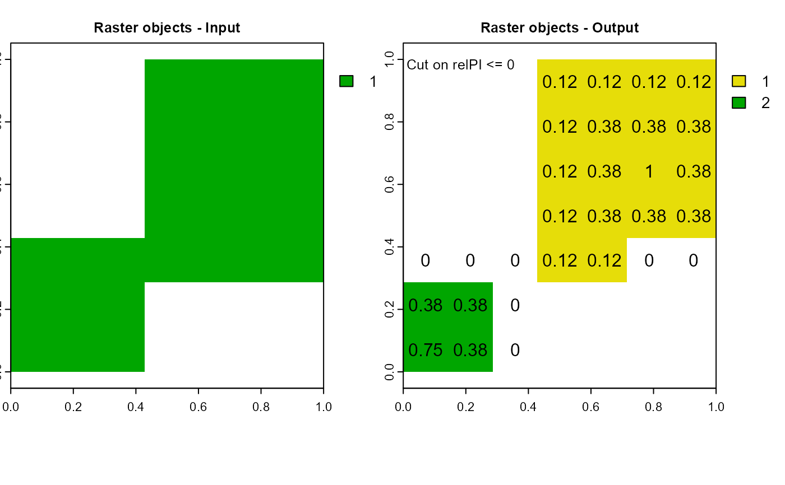

Segment raster objects based on position index values.
pi.sgm(
attTbl,
ngbList,
rNumb = FALSE,
RO,
mainPI = NULL,
secPI = NULL,
cut.mPI = NULL,
cut.sPI = NULL,
min.N = NULL,
plot = FALSE,
r = NULL
)data.frame, the attribute table returned by the function
attTbl.
list, the list of neighborhoods returned by the function
ngbList.
logic, the neighborhoods of the argument ngbList are
identified by cell numbers (rNumb=FALSE) or by row numbers
(rNumb=TRUE) (see ngbList). It is advised to use row
numbers for large rasters.
column name, the name of the column with the raster object IDs.
column name, the name of the column with main position index values.
column name, the name of the column with secondary position index values.
numeric, threshold of main position index values. Cells with values below the threshold are excluded from raster objects.
numeric, threshold of secondary position index values. Cells with values below the threshold are excluded from raster objects.
numeric, the minimum number of cells a raster object has to have to be included in the function output.
logic, plot the results.
single or multi-layer raster of the class SpatRaster (see
help("rast", terra)) used to compute the attribute table. Required
only if plot = TRUE.
The function returns a class vector with raster objects IDs. The vector has length equal to the number of rows of the attribute table. NA values are assigned to cells that do not belong to any raster object.
Raster objects are segmented based on position index values. Two
different position indices can be passed to the function (mainPI and
secPI).
Input raster objects are assigned to the same class to flag cells that are part of raster objects;
Cells with values below mainPI OR below mainPI are
flagged as not being part of any raster object;
Each non-continuous group of raster object cells will identify an output raster object.
Only raster objects with at least as many cells as specified by the
argument min.N are included in the function output.
If both mainPI and secPI are equal to NULL, the
function will exclusively filter raster objects based on their size
(min.N).
# DUMMY DATA
######################################################################################
# LOAD LIBRARIES
library(scapesClassification)
library(terra)
# LOAD THE DUMMY RASTER
r <- list.files(system.file("extdata", package = "scapesClassification"),
pattern = "dummy_raster\\.tif", full.names = TRUE)
r <- terra::rast(r)
# COMPUTE THE ATTRIBUTE TABLE
at <- attTbl(r, "dummy_var")
# COMPUTE THE LIST OF NEIGBORHOODS
nbs <- ngbList(r, attTbl=at)
################################################################################
# COMPUTE RASTER OBJECTS
################################################################################
at$RO <- anchor.seed(at, nbs, silent=TRUE, class = NULL, rNumb=TRUE,
cond.filter = "dummy_var > 1",
cond.seed = "dummy_var==max(dummy_var)",
cond.growth = "dummy_var<dummy_var[]",
lag.growth = Inf)
# One input raster object
unique(at$RO)
#> [1] NA 1
################################################################################
# NORMALIZED RELATIVE POSITION INDEX
################################################################################
at$relPI <- rel.pi(attTbl = at, RO = "RO", el = "dummy_var", type = "n")
################################################################################
# POSITION INDEX SEGMENTATION
################################################################################
RO1 <- pi.sgm(at, nbs,
RO = "RO", # Raster objects
mainPI = "relPI", # PI segmentation layer
cut.mPI = 0, # segment on relPI values <= 0
plot = TRUE, r = r)
graphics::layout(matrix(c(1, 2), nrow=1, byrow=TRUE))
text(xyFromCell(r,at$Cell), as.character(round(at$relPI,2))) # visualize relPI

# Two output raster objects
unique(RO1)
#> [1] NA 1 2